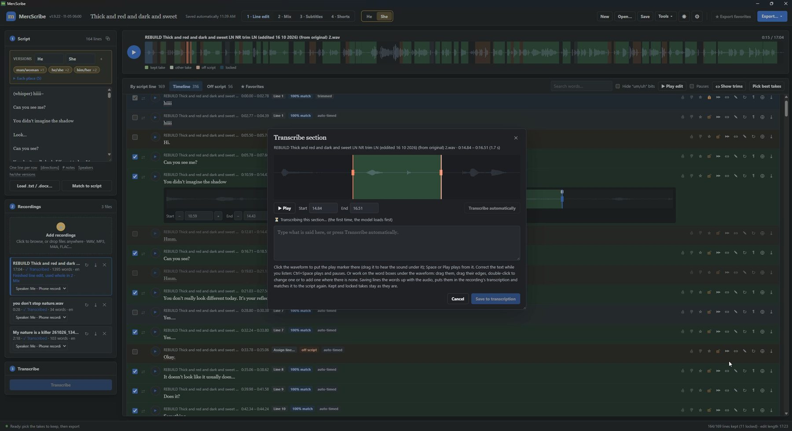
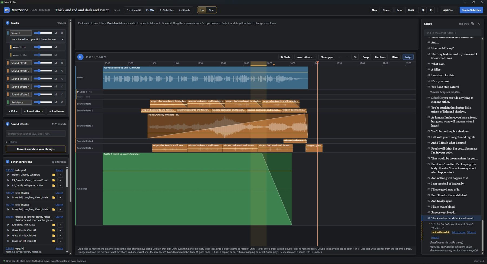
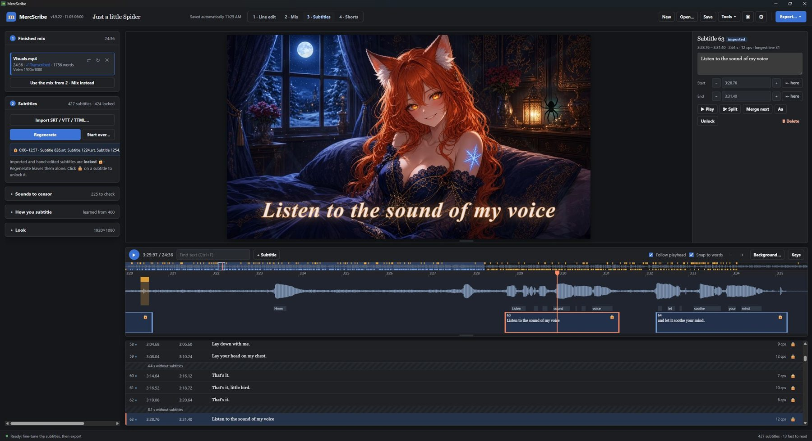
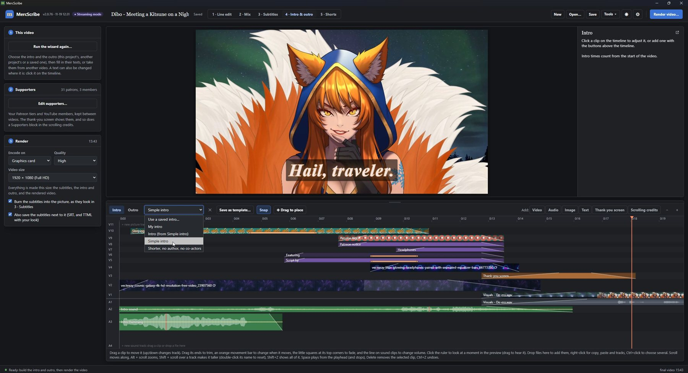
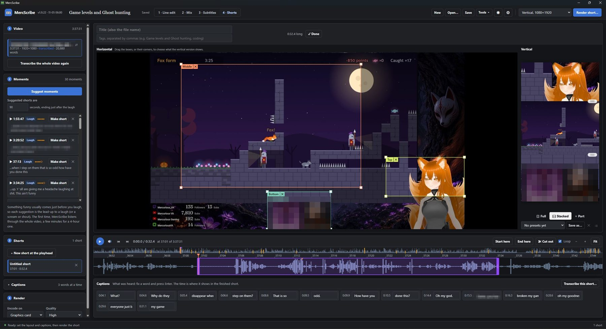

Record your script, and MercScribe finds every take of every line, so you keep the best ones. Then mix them, subtitle the mix and put an intro and outro around it, all the way to a finished video. And cut shorts from it, or from any video.
⤓ Download for Windows
1 · Line edit
2 · Mix
3 · Subtitles
4 · Intro & outro
5 · ShortsClick a picture to see it bigger.
Whisper transcribes your recordings and matches them to your script. Pick the keepers, spot improv and bloopers, and export the edit as WAV and SRT.
Your kept takes on a track per voice, with sound effects and ambience from your own library. Fades, volume and pan over time, EQ, de-esser and compressor, then export the mix, or a timeline to go on in your video editor.
Lined up with the audio and spelled as your script has it. Fine-tune and style them, put them over a picture or a video of your own, and export SRT or an MP4 with the subtitles burned in.
Put your video between an intro and an outro, with titles, credits, your supporters' names, music and transitions. A wizard sets them up, and you can save them for the next video.
Cut shorts from any video, even a 4-hour stream, with captions made for you. Suggest moments finds the laughs, screams and shouts.
MercScribe is free, and keeps working whether you buy it or not. If it saves you time, a one-time license stops the reminders to support it, with all future updates included.
No more reminders, ever. All future updates included, and my heartfelt thanks.
Get the license · $15No more reminders, ever. All future updates included, and MercScribe thanks you in its top bar: ♥ Lovely supporter
Get the license · $35If a new version gives you trouble, an older one can go back over it (the installer warns first). Projects saved in a newer version may not open in an older one.